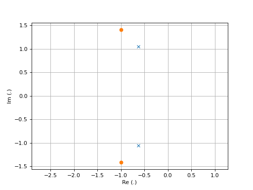
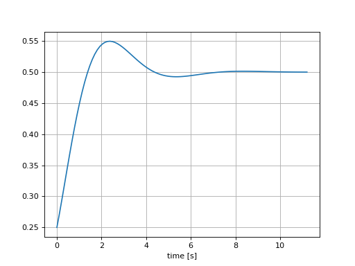
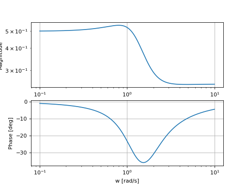
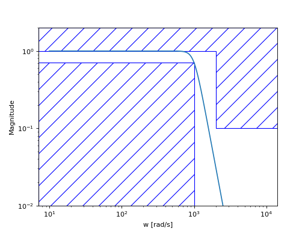

Cheatsheet¶
import numpy as np
import matplotlib.pyplot as plt
from scipy.signal import lti, butter
System Analysis¶
Note
Documentation: https://docs.scipy.org/doc/scipy/reference/signal.html#continuous-time-linear-systems
System Creation¶
\[H(p)=\frac{b_Np^N+\cdots+b_1p+b_0}{a_Np^N+\cdots+a_1p+a_0}\]
num = [1,2,3] # coefficients rangés par puissance décroissante
den = [4,5,6] # coefficients rangés par puissance décroissante
sys = lti(num,den)
Poles and zeros¶
# compute poles and zeros
poles = sys.poles
zeros = sys.zeros
# plot figure
plt.plot(np.real(poles),np.imag(poles),'x')
plt.plot(np.real(zeros),np.imag(zeros),'o')
plt.axis("equal")
plt.xlabel("Re (.)")
plt.ylabel("Im (.)")
plt.grid()

Time Response¶
t,s = sys.step()
# plot figure
plt.plot(t,s)
plt.grid()
plt.xlabel("time [s]")

step response: sys.step()
impulse response: sys.impulse()
arbitrary response: sys.output()
Frequency Response¶
# compute frequency response
w,Hjw = sys.freqresp()
H_mod = np.abs(Hjw)
H_phase = 180*np.angle(Hjw)/np.pi #convert radian to degree
# plot figure
plt.subplot(2,1,1)
plt.loglog(w,H_mod)
plt.ylabel("Magnitude")
plt.grid()
plt.subplot(2,1,2)
plt.semilogx(w,H_phase)
plt.ylabel("Phase [deg]")
plt.xlabel("w [rad/s]")
plt.grid()

Filter Design¶
Note
Documentation: https://docs.scipy.org/doc/scipy/reference/signal.html#matlab-style-iir-filter-design
N = 5 # ordre du filtre
wc = 1000 # pulsation de coupure
num, den = butter(N, wc, analog=True)
sys2 = lti(num,den)
Plot Prototype¶
def plot_prototype(wc,Tc,ws,Ts):
ax = plt.gca()
xmin, xmax = ax.get_xlim()
ymin, ymax = ax.get_ylim()
options = {"fill": False,"closed": True,"color": 'b',"hatch": "/"}
polygon_data1 = [[xmin,Tc],[wc,Tc],[wc,ymin],[xmin,ymin]]
polygon_data2 = [[xmin,ymax],[xmin,1],[ws,1],[ws,Ts],[xmax,Ts],[xmax,ymax],[xmin,ymax]]
patch1 = plt.Polygon(polygon_data1,**options)
patch2 = plt.Polygon(polygon_data2,**options)
ax.add_patch(patch1)
ax.add_patch(patch2)
# compute frequency response
w,Hjw = sys2.freqresp()
H_mod = np.abs(Hjw)
# plot frequency response
plt.loglog(w,H_mod)
plt.ylabel("Magnitude")
plt.ylim([0.01,2])
plt.xlabel("w [rad/s]")
plot_prototype(wc,1/np.sqrt(2),2000,0.1);
